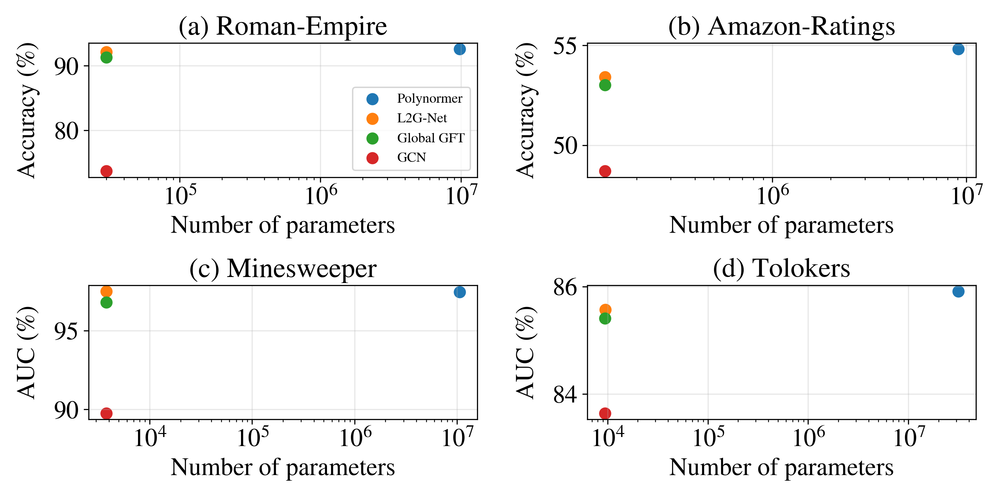

Abstract
Despite their theoretical advantages, spectral methods based on the graph Fourier transform (GFT) are seldom used in graph neural networks due to the cost of computing the eigenbasis and the lack of vertex-domain locality in the resulting representations. As a result, most GNNs rely on local approximations such as polynomial Laplacian filters or message passing, which limit their ability to model long-range dependencies.
We introduce an exact factorization of the GFT into operators acting on subgraphs, combined via a sequence of Cauchy matrices. Building on this factorization, we propose L2G-Net (Local to Global Net): a new class of spectral GNNs that operates by processing the spectral representations of subgraphs and combining them via structured matrices, avoiding full eigendecompositions with $O(kn^2)$ complexity. Experiments on large graphs show that L2G-Net scales to regimes out of reach for the standard GFT, and is competitive with state-of-the-art methods with orders of magnitude fewer learnable parameters.
Method
The GFT of any graph admits an exact Cauchy factorization. Given a graph partition, the global GFT decomposes as a product of local subgraph GFTs and a chain of Cauchy matrices, one per bridge edge connecting subgraphs.

Key Theorem: Cauchy Factorization
For any graph $G \in \mathcal{F}(L, \{G_i\}_{i=1}^m, k)$ with Laplacian $\mathbf{L} = \mathbf{U}\,\mathrm{diag}(\boldsymbol{\lambda})\,\mathbf{U}^\top$, and $\mathbf{U}_0$ the block-diagonal matrix of subgraph eigenvectors:
$$\mathbf{U}^\top = \mathbf{D}(\boldsymbol{\lambda}, \tilde{\boldsymbol{\lambda}}_{K-1}) \cdots \mathbf{D}(\tilde{\boldsymbol{\lambda}}_1, \tilde{\boldsymbol{\lambda}}_0)\, \mathbf{U}_0^\top$$
where each $\mathbf{D}(\tilde{\boldsymbol{\lambda}}, \boldsymbol{\lambda})$ is a Cauchy factor, a structured orthogonal matrix arising from a rank-one update of the Laplacian corresponding to one bridge edge. Each Cauchy factor is localized to the subgraphs it connects.
Architecture
L2G-Net inserts learnable spectral filters between Cauchy factors at every level of the hierarchy. Local filters capture subgraph-level spectral patterns; global filters model interactions across the full graph. The architecture is determined entirely by the graph topology, with no positional encodings or graph rewiring required.

Complexity Comparison
L2G-Net achieves a strictly intermediate computational profile, more expressive than local methods, and dramatically cheaper than full spectral methods.
The complexity scales with the subgraph cut size $k$, not the total edge count. For graphs with hierarchical structure (common in real-world networks), this yields significant savings. When $k = O(1)$, the factorization complexity is $O(n^2)$, a full order of magnitude cheaper than dense eigendecomposition.
Runtime on Synthetic Graphs

Experimental Results
Heterophilous Benchmarks
On large-scale heterophilous graphs (Platonov et al., 2023), L2G-Net matches or exceeds state-of-the-art methods including Polynormer and Stable-ChebNet, while using orders of magnitude fewer learnable parameters.
| Method | Roman-Empire | Amazon-Ratings | Minesweeper | Tolokers |
|---|---|---|---|---|
| GCN | 73.69 | 48.70 | 89.75 | 83.64 |
| CO-GNN | 91.57 | 54.17 | 97.31 | 84.45 |
| Polynormer | 92.55 | 54.81 | 97.46 | 85.91 |
| MP-SSM | 90.91 | 53.65 | 95.33 | 85.26 |
| Stable-ChebNet | 92.03 | 53.15 | 95.71 | 85.55 |
| L2G-Net (ours) | 92.12 | 53.39 | 97.50 | 85.57 |
Accuracy (↑) for Roman-Empire and Amazon-Ratings; AUC (↑) for Minesweeper and Tolokers.
City-Scale Graphs
On city road network graphs with over $10^5$ nodes (Liang et al., 2025), full eigendecomposition runs out of memory. L2G-Net factorizes the London graph (569k nodes) in ~144 minutes, 3-4 orders of magnitude faster than projected eigendecomposition.
| Method | Paris | Shanghai | LA | London |
|---|---|---|---|---|
| ED (projected) | 50,413 min | 121,932 min | 131,544 min | OOM |
| CF (L2G-Net, ours) | 17.91 min | 45.61 min | 61.53 min | 144.22 min |
Parameter Efficiency

Citation
If you find this work useful, please cite:
@inproceedings{fernandezmenduina2026l2gnet,
title = {L2G-Net: Local to Global Spectral Graph Neural Networks
via Cauchy Factorizations},
author = {Fern{\'a}ndez-Mendu\~{i}na, Samuel and
Pavez, Eduardo and
Ortega, Antonio},
booktitle = {Proceedings of the 43rd International Conference
on Machine Learning},
year = {2026},
series = {Proceedings of Machine Learning Research},
publisher = {PMLR}
}